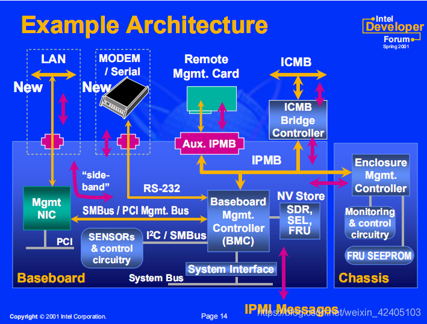
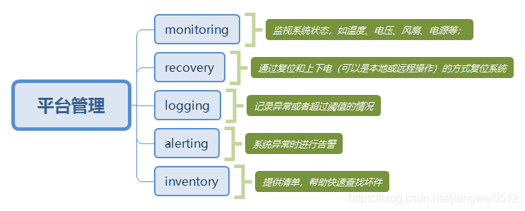
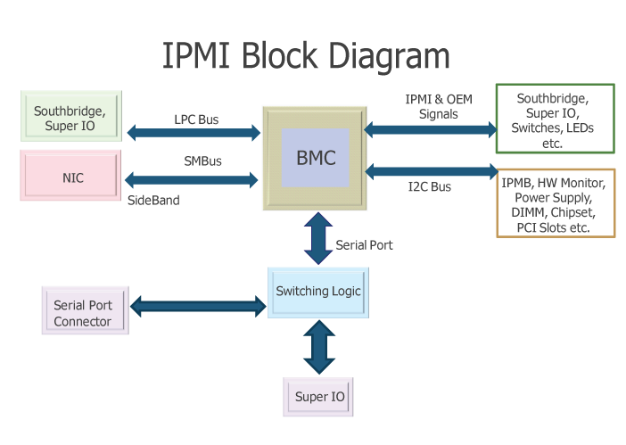
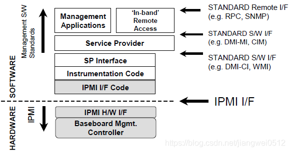
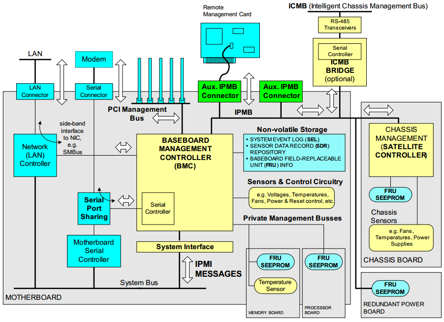
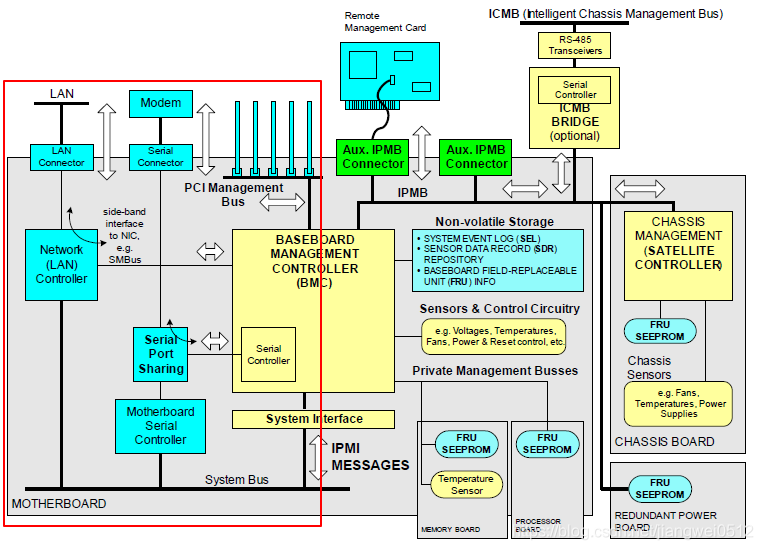
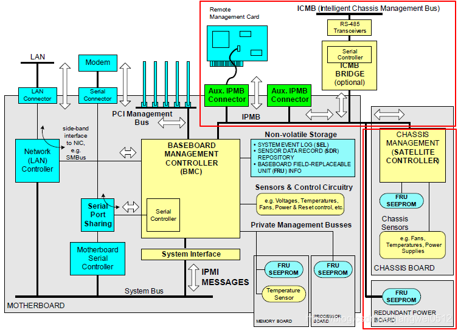
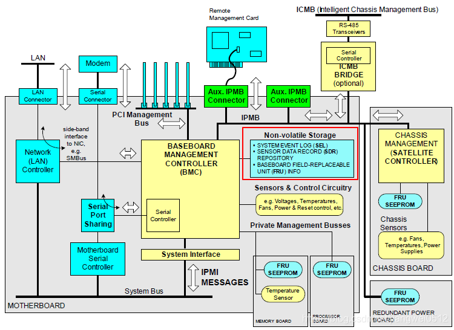
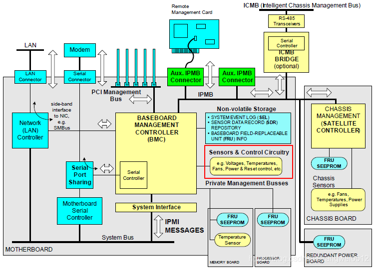

服务器BMC与IPMI基础知识
初识BMC与IPMI
什么是BMC？
BMC全名Baseboard management controller, 是一种嵌入式管理微控制器。
BMC全称为基板管理控制器（Baseboard Manager Controller，简称BMC），它通过监控系统的电源、温度等来保证系统处于正常运行的状态。
其实BMC就是一个管家的角色。能对整个系统的电源、温度等性能进行管理，在系统死机时还能充当看门狗的角色对CPU进行重启操作。
一般的电脑系统，比如我们自己用的PC，并不会带BMC，因为没必要，CPU能把BMC要干的活都干了。但复杂的服务器，就非常有必要引入BMC了。这就好比一般的家庭不会有管家，但大户人家，家大业大，所以管家是能分担家务活的。
BMC系统一般依赖于BMC芯片，目前常用的是ASPEED公司生产的AST2500。
AST2500是ASPEED公司生产的BMC芯片，用于服务器的远程管理，一般还兼用作服务器的显示芯片，输出VGA信号，显示功能很基础，但对于服务器而言足够了。
目前所知晓的绝大部分厂商（DELL、HP、联想、浪潮、曙光等）所使用的BMC芯片都是该公司所生产的，型号包括但不限于AST2050/2300/2400/2520，华为以前也使用该公司的BMC，为了保证信息安全，现在已逐步切换为自研BMC芯片。
BMC是实现IPMI通用接口规范的核心控制器。
在支持IPMI v1.5典型接口时，配置上需要有32K的RAM内存和128K的flash memory。当然，配置越高它的性能越强大。
那么BMC在系统中是怎么起到其作用的呢？下面是2001年Intel发布的IPMI v1.5的架构图：

从图中我们可以看到BMC对外通过System Interface连接系统总线，对内通过IPMB：Intelligent platform management Bus连接其他的component。
特别地说，BMC连接了两个网卡，一条本地连接，一条可提供远程连接网口。
这也就提供了远程使用ipmitool工具管理的可能。
除此之外，这些传感器的具体配置信息，如告警门限、事件触发是否允许等配置都保存在一组名为SDR（Sensor Data Record）的数据里面。而传感器产生的告警事件则保存在一组叫做SEL（Sensor Event Log）的数据里面。
什么是IPMI？
IPMI全称是Intelligent platform management interface。 由它的英文我们可以看出，它是一种接口，一种协议。
也就是说，它这个IPMI定义了什么接口可以让使用对应工具管理者看到。也就是说，我通过BMC来控制这些sensor,Fan,voltage,etc…并计算出结果告诉user一个这些参数的序列。
这些参数都可以通过BMC的功能来查询。
上面还提到BMC还可以通过内存和外存存储系统的数据以及事件日志，这些功能的实现有点类似于在微型计算机系统课上实现存储功能。当然其实现是需要汇编语言的。
IPMI的系统组件主要包括如下：
- BMC:baseboard management controller;
- IPMB:Intelligent Platform Management Bus;
- ICMB:Intelligent Chassis management Bus;
- SDR:Sensor Data Record;
- SEL:System Event Log;
- FRU:Field Replacement Unit
User可以通过三种方式使用IPMI查询：
- Linux操作系统下通过命令行的方式查询；例如CPU温度等
- 管理软件；
- 浏览器，带Java虚拟机
什么是BMC
在介绍BMC之前需要了解一个概念，即平台管理（platform management）。
平台管理表示的是一系列的监视和控制功能，操作的对象是系统硬件。比如通过监视系统的温度，电压，风扇、电源等等，并做相应的调节工作，以保证系统处于健康的状态。
当然如果系统真的不正常了，也可以通过复位的方式来重新启动系统。
同时平台管理还负责记录各种硬件的信息和日志记录，用于提示用户和后续问题的定位。
下图是平台管理涉及到的功能概述：

以上的这些功能可以集成到一个控制器上来实现，这个控制器被称为基板管理控制器（Baseboard Manager Controller，简称BMC）。
需要说明的是，BMC是一个独立的系统，它不依赖与系统上的其它硬件（比如CPU、内存等），也不依赖与BIOS、OS等（但是BMC可以与BIOS和OS交互，这样可以起到更好的平台管理作用，OS下有系统管理软件可以与BMC协同工作以达到更好的管理效果）。
一般我们的电脑不会带BMC，因为用处不大，一些温度、电源等的管理，CPU（或者EC，这就是另外一个话题了）来控制就够了。
但是对于系统要求高的设备，比如服务器，就会用到BMC。
当然因为BMC是一个独立的系统，对于某些嵌入式设备，可能不需要其它处理器，光一个BMC就能完成工作。
说到底BMC本身也是一个带外处理器（一般都是ARM处理器）的小系统，单独用来处理某些工作也完全是可以的。
不过这里既然叫做BMC，那么总的来说重点还是在平台管理，所以本文主要说的是服务器中的BMC。
BMC在系统中的位置大致如下图所示：

BMC通过不同的接口与系统中的其它组件连接。
LPC、I2C、SMBUS，Serial等，这些都是比较基本的接口，而IPMI，它是与BMC匹配的接口，所有的BMC都需要实现这种接口，这里需要特别的介绍。
IPMI
IPMI的全称是Intelligent Platform Management Interface，智能平台管理接口。
看了名字也不需要特别介绍它用来干什么的了，关于它的详细介绍可以参看https://www.intel.com/content/www/us/en/servers/ipmi/ipmi-home.html，这里只做简单的说明。
IPMI就是对“平台管理”这个概念的具体的规范定义，该规范定义了“平台管理”的软硬件架构，交互指令，事件格式，数据记录，能力集等。而BMC是IPMI中的一个核心部分，属于IPMI硬件架构。下图灰色部分就是IPMI涉及的范围：

可以看到BMC在硬件的最底层，而上层白色部分是系统中的管理软件。
由于本文是介绍BMC的，所以这里只介绍BMC相关的IPMI硬件模块。
IPMI硬件模块
IPMI规定了很多的东西，BMC是其中最重要的一个部分，此外还有一些”卫星“控制器通过IPMB与BMC相连，这些”卫星“控制器一般控制特定的设备。
IPMB全称Intelligent Platform Management Bus，是一种基于I2C的串行总线，它用于BMC与”卫星“控制器的通信，其上传递的是IPMI命令。
对于相对简单的系统来说，BMC已经能够满足要求，但是当系统比较复杂，由多个子系统构成时，那么通过IPMB和“卫星”控制器，就能够更好地管理复杂系统。
下面的图描述了与IPMI有关的各个硬件模块：

下面简单的介绍各个部分。
MOTHERBOARD
首先是图中的左下角部分，名称写着Mother Board。

通常，在服务器中，这一部分是主角，它包含了CPU，PCH等主要的部件。
这里我们可以看到它连接除了数个组件：网卡，串口和IPMI总线，其实还有一个部分在图中最上面中间的PCI总线。
网卡：服务器需要用到网卡，这个本身没有什么好介绍的，重点其实在于BMC到网卡的连接，后续会介绍。
串口：串口用于输出服务器的调试信息，但是这里值得注意的是其中的Serial Port Sharing，它使得服务器的串口输出可以直接输出，也可以输出到BMC。至于为什么要输出到BMC，这里其实需要注意的是一种常用的场景。服务器位于机房，而工作人员通常不会直接在机房操作，而是通过网络（这也是为什么BMC会连接网卡的原因）进行操作，这个时候过需要获取服务器的串口信息，就不方便直接去机房，这个时候通过BMC来获取服务器串口信息就是一个好主意。
IPMI总线：这是BMC与服务器通信并进行控制的主体，当然少不了。
PCI总线：这个部分的作用跟串口很像。服务器除了输出串口信息，当然还需要输出图形界面之类的东西。从服务器端来看，它通过PCI连接的就是一个显卡，通过它来输出显示。
IPMB
再来到图中的右上角，其中描述的是通过IPMB连接的设备。

这些设备跟BMC类似，也是用来进行管理芯片。
它们是对BMC的补充，从而扩展BMC的功能。
Non-volatile Storage
我们知道BMC其实是一个独立的芯片，那么它肯定也需要运行系统。
通过BMC里面运行的是一个类Unix系统，而该系统就存放再Non-volatile Storage中，通常就是SPI Flash里面。

跟一般的存储介质没有本质的区别。
除了系统本身之后，还包含一系列BMC会存放的信息。
比如从服务器上面获取到的串口信息；系统本身的报警信息；FRU信息等。
Sensors & Control Circuitry
这一部分虽然图中只占很小的一部分，但却是BMC最基本的功能：获取信息和控制环境。
BMC会通过I2C/PECI等总线去获取设备的温度，然后根据预先设定的策略去调整温度。
调整的方式两种，一种就是调整风扇，属于主动降温；另一种是调整供电，比如CPU的P状态，或者关闭多余的硬盘等，属于被动降温。
FRU
FRU的全称是Field Replaceable Unit。
从图中也可以看出，类似内存条，CPU等就属于FRU，它们在服务器中通常是可以更换的。
BMC会检测这些设备并保存相关的信息。
当这些设备的在位情况发生变化时，BMC会发生相关的告警
来源：https://blog.csdn.net/star871016/article/details/112257689
ipmitool源码解析（一）——一次带内ipmitool raw data发送过程
来源：https://blog.csdn.net/qq_40144132/article/details/114836282